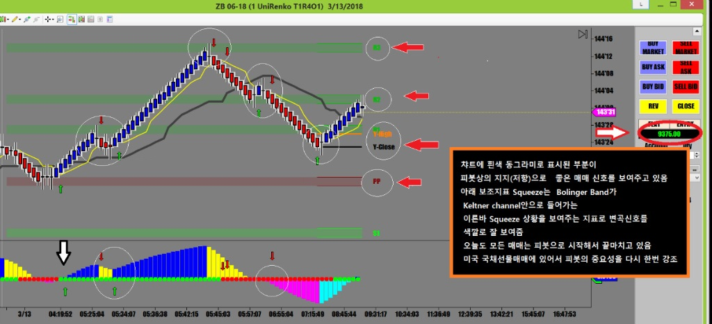

오늘 아침에 발표되는 CPI 지표가 오늘장을 결정하는 주요 재료였음
어제는 거의 매매가 불가능할 정도로 움직임이 없었기에 허탕만 치고
드디어 오늘 지표 발표를 기다리며 임전무퇴의 각오로 출발
4시반에 매매신호가 나와서 일단 한번 매매로 980불 정도 수익
지표 발표 후 크게 움직이는 장에서 3번 더 매매로 중박. 아쉽게도 대박인 $10,000를 못넘김.
국채선물은 가끔씩 움직이지 않는 날들이 있어 크게 움직일 때 크게 벌어야 되는 선물임.
챠트에 표시한대로 국채선물매매는 피봇이 전부임
어제 종가 고가 저가는 그저 참고수준으로만 활용.
이런 지점이 피봇 지지(저항)과 맞물려 있으면 더 좋음
항상 강조하지만 국채선물의 움직임은 P2P
Pivot to Pivot임
아래 챠트에서 보는것처럼 피봇 지지1에서 피봇지지2로 메인 피봇에서 피봇저항 1까지
낙하지점이 거의 일정함.
포지션을 잡고나면 불안하더라도 일단 목표가(Landing Point)를 피봇으로 잡아야 함
